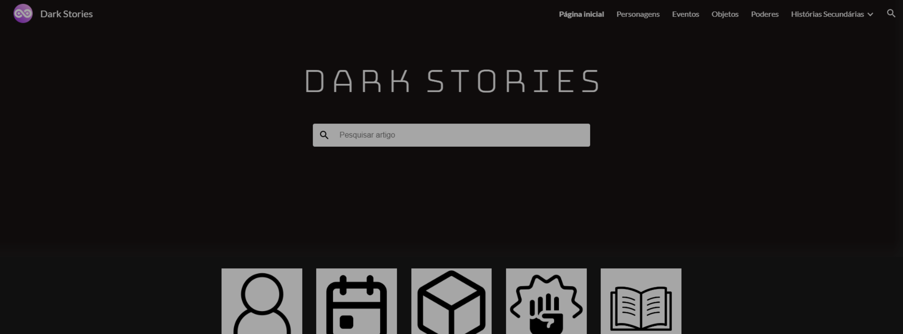
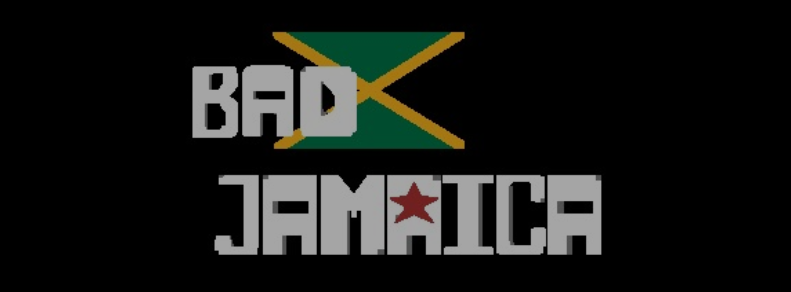

THE DOOMSDAY GLOCK
Um jogo criado para um trabalho de Gestão de Conteúdo Web.

DISEE
Um clube de RPG criado para um projeto de Gestão de Conteúdo Web.

PRIMEIRO SITE
Um site criado totalmente a mão, sem o uso de bootstrap

ESCAPEROOM
Uma série de desafios baseados em programação e códigos feitos para o dia do profissional de TI.

JAKE OFFICEMAN
Um perfil que vende cursos de Pacote Office. Criado para um projeto de Gestão de Conteúdo Web.

GOD POSEIDON
Um site de portfólio criado no TeleportHQ e hospedado no Vercel.

DARK STORIES
Um site de informações sobre histórias que escrevo. Criado e hospedado no Google Sites.

BAD JAMAICA
Um jogo 2D de escolhas criado para a Feira Tecnológica.